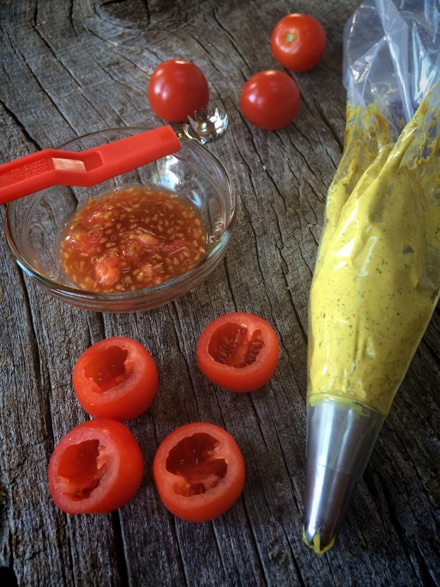
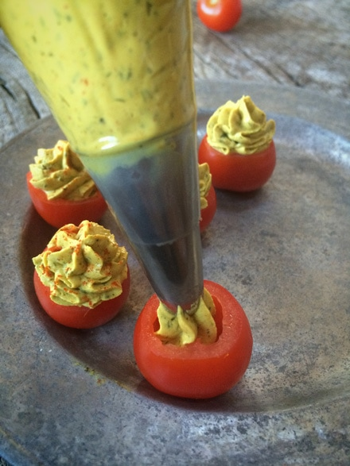

Lil’ Deviled Tomatoes

Deviled eggs. They were always a major hit at our family gatherings. They, of course, they were never the star of the food buffet but were always devoured within minutes. Grandma was the one who conducted the list of dishes needed for the major holiday gatherings.
It was like a ladder to climb. On the bottom rung, you brought the soda pop or chips. This step was geared towards the younger ones in the family who didn’t have much cooking experience.
It took years to climb the food ladder. Everyone had their “specialty” dish that they brought year after year. Grandma was known for her Swedish meatballs; Mom was an automatic shoo-in for bringing potato salad and baked beans, Aunt Linda was in charge of the veggie tray and deviled eggs, Aunt Nancy brought the buns, Uncle Billy always supplied a smoked ham and darn-it… I got stuck on the ladder rung of chips. Year after year, function after function… chips. At least there are hundreds of different flavors, so I was at least able to mix it up. lol
Thank goodness my younger cousins were coming of age to start the climb on the food ladder. This should have automatically bumped me up a rung or two… but it didn’t. Back then, I had a bit of a bad reputation with my cooking (Dad said I could burn water).
Finally, when I hit my thirties, I was nudged up a rung… I was so excited!! I was asked to make the deviled eggs! Whoooo-hoooo! The family trusts me with the deviled eggs!!!! I was floating on a cloud. I later found out that my Aunt Linda was going to be out-of-town and that is how I “earned” my promotion. Awe… fiddlesticks. Oh, well! I wasn’t going to blow this chance.
I bet your egg-specting some disaster story about how my eggs turned out with that sort of introduction… but no, there is a happy ending … they turned out great. :) So for those of you who are lingering on the bottom rung of the ladder on chip duty… stay strong, for soon. one day you too may get asked to bring the deviled eggs and when you do, give this recipe a try, it just might guarantee you a permanent promotion. :)
The “egg” filling makes up 2 cups worth. I don’t have a set amount of how many Deviled Tomatoes that this recipe will make because it will depend on the size of tomatoes that you use. Keep in mind that you don’t want them to be too large. Just about the size that yields 1-2 bites.
Ingredients:
Yields 2 cups filling
“Egg” mixture:
- 1 1/2 cups raw cashews, soaked 2+ hours or 1 ½ cups chopped avocado
- 1/2 cup water
- 3 Tbsp yellow mustard or raw mustard
- 2 Tbsp raw apple cider vinegar
- 2 tsp raw agave nectar
- 1 tsp smoked paprika
- 1/2 tsp onion powder
- 2 tsp dried dill
- 1/2 tsp curry powder
- 1/2 tsp turmeric powder
- 3/4-1 tsp Kala Namak (Indian Black Salt) very important gives that egg taste
- 1/8 tsp ground black pepper
Preparation:
“Egg” mixture:
- If using cashews; soak, drain, and rinse the cashews before adding to the blender. If using avocado; peel and remove the seed before adding to the blender.
- Add the water, mustard, apple cider vinegar, agave, paprika, onion powder, dill, curry powder, turmeric, Indian Black salt, and pepper. (whew, I think I got it all). Blend until smooth and creamy.
- If you used cashews make sure that the sauce is smooth and doesn’t have any tiny bits of cashews.
- Pour into a medium-sized mixing bowl and set in the fridge to chill. It will firm up a bit once chilled.
- Prepare the cherry tomatoes cutting off the bottom of each one. Not the top piece where the stem was attached. That end will create a nice foundation for the tomato to sit on.
- After slicing off the end, use a paring knife or corer to remove the inside of the tomato. Remove all the seeds. If they are left inside the tomato it will water down the filling after it is piped in them. Blot dry with a paper towel.
- Place the “egg” filling in a piping bag. Place the tip into the tomato and gently squeeze the batter into the base of it, then create a swirl as you reach the top.
- Sprinkle smoked paprika on top and enjoy!


© AmieSue.com